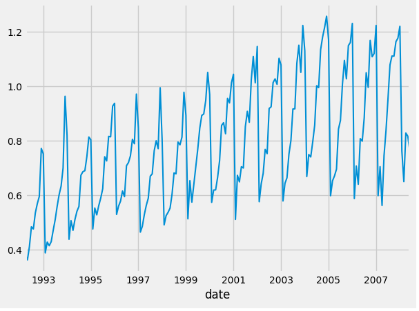

Part 2 - Autocorrelation, Moving Average, & More
A simple introduction to Seasonal Trends, Decompositions, and many more! This is the second and last part of the lessons on Autocorrelation, Moving Averages, Trends, and Decompositions. For the code used in this tutorial, please view the previous post for the github link.
Seasonal Trends
If we want to understand what a Seasonal Trend _ is, I think it’s best if we first understand what we are refrencing when we mean a _trend. So, look at this graph,
as you can see, over time, the graph tends upwards. That simple relationship is what we mean when we talk about trends: in which direction does the data tend? If over time, it tends to increase, then we refer it to be a positive trend; if it tends to decrease over time, then we refer to it as a negative trend.
Seasonality in Data
These are patterns in the data which are affected by seasonal factors, such as the time of year, or day of weak. For example, we can observe that the sale of snow shovels will be a function of the time of year, whether it is winter or not. So over a 3 year period, we should expect a spike of sales every 12 or so months (which is the time between winters).
Please observe this graph of the Monthly expenditure ($AUD) on corticosteroid drugs that the Australian health system had between 1991 and 2008: .
As you can see, there is a spike in the data every 12 months.
If you run this piece of code, we can view the dates:
#installations
!pip install skforecast
import numpy as np
import pandas as pd
from skforecast.datasets import fetch_dataset
# Data download
# ==============================================================================
data = fetch_dataset(name='h2o_exog', raw=True) #this dataset is on australian health system, from 1991 to 2008. This is from Hyndman (2023) fpp3
#Monthly expenditure ($AUD) on corticosteroid drugs that the Australian health system had between 1991 and 2008. Two additional variables (exog_1, exog_2) are simulated.
# Data preparation
# ==============================================================================
data = data.rename(columns={'fecha': 'date'})
data['date'] = pd.to_datetime(data['date'], format='%Y-%m-%d')
data = data.set_index('date')
data = data.asfreq('MS')
data = data.sort_index()
#data = data.y
data
Then you can click the “Convert this data to an interactive table” button and see the entire dataset.
As you can see, the spike occurs around winter time. Now there is probably an entire medical reason for this (try to research and find the answer yourself), but that’s outside the scope of this lesson. The first data is April 1st, and from the next April 1st, you can see that there is exactly one major spike in the data. The spike is a function of time, and this pattern is reoccuring.
And that is the simple, introductory, definition to seasonality.
And that’s simply what we are refering to when we say Seasonal Trends. Any patterns in data that has a repeated, predictable, and time-dependent factors, is a type of seasonal trend (can you see why we call it seasonal?).
Cycles
Similarly, cycles are when the data shows rises and falls that are not of a fixed frequency. This could be from economic activity.
Cycles and Seasonality are often confused, and their main differentiation is if the pattern is of fixed frequency.
Decompositions
In this section, we will discuss two main ideas which are often closely related: transformations and decompositions.
Box-Cox Transformations
Transformations are useful when the data exhibits increases or decreases with the level of the series, such as logorithmic transformations. Transformations are often used to simplify the data before forecasting. Here we will dicuss a common one: the Bickel & Doksum Transformation which is actually a modified Box-Cox Transformation. Mathematically, it looks like this:
\[w_t = \begin{cases} \log(y_t) & \text{if } \lambda = 0, \\ \frac{\operatorname{sign}(y_t) \cdot |\lambda - 1|}{\lambda} & \text{otherwise}. \end{cases}\]Here, wt depends on 𝜆. If λ is zero, we take the logarithm of y (which in Box-Cox transformation is always a natural logarithm, i.e., to base e). However, if λ is anything else, wt will be
\(\frac{\operatorname{sign}(y_t) \cdot |\lambda - 1|}{\lambda}\).
here it is in code:
#Data Transformations
data = data.y
def get_sign(num):
if (num < 0):
return -1
return 1
def bickel_doksum_transform(data, lam):
new_data = data.copy()
if (lam == 0):
for i in range(len(data)):
new_data.iloc[i] = np.log(data.iloc[i])
else:
for i in range(len(data)):
new_data.iloc[i] = (get_sign(data.iloc[i])*(pow(abs(data.iloc[i]), lam)-1))/lam
return new_data
t_data = bickel_doksum_transform(data, .1)
data.plot()
t_data.plot()
Please visit here for a more detailed explaination.
Decomposition
Here we will dicuss how we can “split” apart a time series dataset.
Classical Decomposition
In Classical Decomposition we assume the seasonal component is constant every year. But for multiplicative seasonality, the m values that form the seasonal component are sometimes called the “seasonal indicies”.
Additive and Multiplicative Decompositions
Steps to an Additive Decomposition:
Step 1: If m is an even number, compute the trend-cycle component \(\hat{T}_t\) using a 2 * m-MA. If m is an odd number, compute the trend-cycle component Tt using an m-MA; using this:
\[\hat{T_t} = \frac{1}{2} \cdot [(\frac{1}{m} \cdot \sum_{j=-k-1}^k y_t + j) + ( \frac{1}{m} \cdot \sum_{j=-k}^{k+1} y_t + j)]\]Step 2: Calculate the detrended series: yt - Tt
Step 3: To estimate the seasonal component for each season, simply average the detrended values for that season. For example, with monthly data, the seasonal component for March is the average of all the detrended March values in the data. These seasonal component values are then adjusted to ensure that they sum to zero. The seasonal component \(\hat{S}_t\) is obtained by stringing together these monthly values and replicating the sequence for each year of data.
Step 4: The remainder component is calculated by subtracting the estimated seasonal and trend-cycle components: \(\hat{R}_t = y_t - \hat{T}_t - \hat{S}_t.\)
And multiplicative decomposition is very similar (for this lesson, we will not be going into this one for now), but essentially, to detrend a multiplicative data, do \(y_t / \hat{T}_t\) instead.
In practice
So here is how decompositions basically work:
We assume an addititve decomposition is yt = St + Tt + Rt.
and multiplicative is yt = St * Tt * Rt. And also if you want to convert multiplicative to additive: yt = St * Tt * Rt is equal to \(\log y_t = \log S_t + \log T_t + \log R_t.\)
- Tt - Trend-cycle component of period t
- St - Seasonal component of period t
- Rt - Remainder component of period t
Estimating the Seasonal Component
First, take the average accross every Januaries to get S(1), if it’s monthly. Here’s what that means. If we had a dataset that spanned 4 years, we would take the averages of every January data point, then every February data point, then every March, and so on. Thus, we would be left with 12 averages if it’s monthly data. If it’s weekly, then we would take the average of every week in the year, and so on.
So for additive monthly: \(S^{(1)} + S^{(2)} + ... + S^{(12)} = 0\) and for multiplicative monthly, we have: \(S^{(1)} + S^{(2)} + ... + S^{(12)} = m\)
So first, de-trend the data. Then take the average values for each season!! And \(\hat{S}_t\) is just the replications of seasonal indicies!
So here is the code:
from statsmodels.tsa.seasonal import seasonal_decompose
def additive_de_trend(data, order):
new_data = data.copy()
length = len(data)
k = int((order-1)/2)
for i in range(length):
if (i > k and i < length-k):
if (order % 2 == 1):
sum = 0
for j in range(i-k, i+k):
sum += data.iloc[j]
avg = sum/order
new_data.iloc[i] = data.iloc[i] - avg
else:
sum1 = 0
sum2 = 0
for j in range(i-k-1, i+k):
sum1 += data.iloc[j]
avg1 = sum1/order
for j in range(i-k, i+k+1):
sum2 += data.iloc[j]
avg2 = sum2/order
new_data.iloc[i] = data.iloc[i] - ((avg1+avg2)/2)
return new_data
def seasonal_comp(data, order):
new_data = data.copy()
seasonal_components = pd.DataFrame(index = range(order), columns=['y'])
de_trended_data = additive_de_trend(data, 12)
for i in range(order):
sum = 0
count = 0
index = i
while index < len(de_trended_data):
sum += de_trended_data.iloc[index]
count += 1
index += order
seasonal_components.y.iloc[i] = (sum/count)
place = 0
for i in range(len(data)):
new_data.iloc[i] = seasonal_components.y.iloc[place]
place += 1
if place >= order:
place = 0
return new_data
ad_data = additive_de_trend(data, 20)
season_comps = seasonal_comp(data, 12)
data.plot()
#ad_data.plot()
trend_comp = moving_average(data, 12)
trend_comp.plot()
season_comps.plot()
decomposition = seasonal_decompose(data)
# Plot the components
decomposition.plot()
sum1 = 0
for i in range(len(season_comps)):
sum1 += season_comps.iloc[i]
print(len(data))
This will compare our code, to an official Decomposition Function:
to
And as you can see, they are pretty damn close!! :)
STL Decomposition
Now, this algorithmically is complicated for these type of posts; but you should be able to understand them with the basics provided above.
STL stands for Seasonal & Trend Decomposition using Leoss. What this does is it basically updates trend and seasonality components iteratively, starting with \(\hat{T}_t = 0\)
And that’s it!! I have left out a lot of key information, to keep it short. So please view this online textbook for more: otext
If you would like to suggest anything, please let me know!
Subscribe to Burak Ayyorgun
Get the latest posts delivered right to your inbox